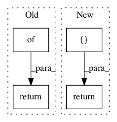

cbf6039c8b6ebddd501258530f367761406c9366,texar/modules/berts/berts.py,BertBase,default_hparams,#,50

Before Change
"name": "bert"
}
return {
"name": "bert"
}
def _build(self, inputs, sequence_length, *args, **kwargs):
Encodes the inputs and (optionally) conduct downstream prediction.
After Change
"name": "bert"
}
return {
"pretrained_model_name": "bert-base-uncased",
"name": "bert_base",
"@no_typecheck": ["pretrained_model_name"]
}
def _build(self, inputs, *args, **kwargs):
Encodes the inputs and (optionally) conduct downstream prediction.
In pattern: SUPERPATTERN
Frequency: 3
Non-data size: 4
Instances
Project Name: asyml/texar
Commit Name: cbf6039c8b6ebddd501258530f367761406c9366
Time:
Author: null
File Name: texar/modules/berts/berts.py
Class Name: BertBase
Method Name: default_hparams
Project Name: deepchem/deepchem
Commit Name: de7f5863338af5e1f92257cb29a6ca9a1c52c473
Time:
Author: null
File Name: examples/low_data/toxcast_maml.py
Class Name: ToxcastLearner
Method Name: get_batch
Project Name: deepchem/deepchem
Commit Name: 9c51193d4203f796c2adeca69b29a4ea168d7ceb
Time:
Author: null
File Name: deepchem/models/tensorgraph/models/gan.py
Class Name: GAN
Method Name: predict_gan_generator